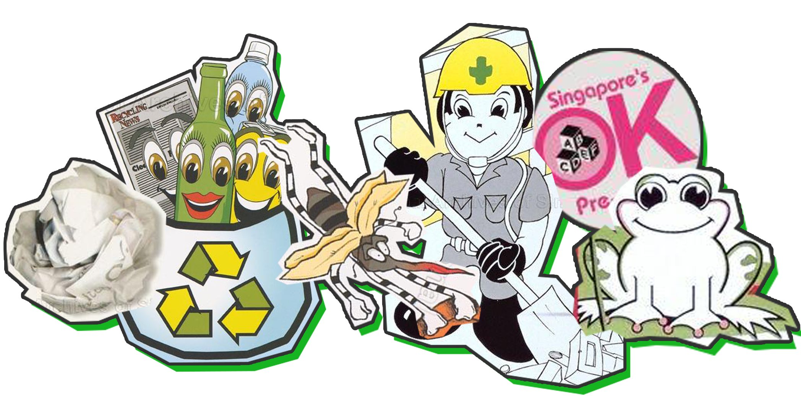
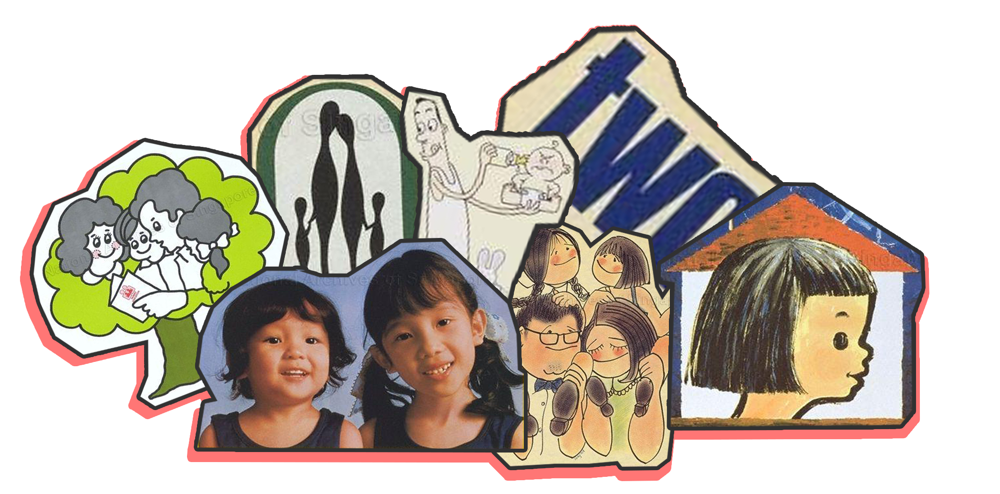
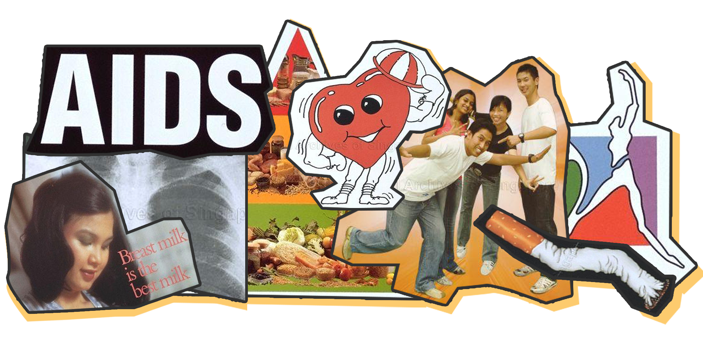

National campaigns in Singapore, as defined by Tham (1986), are state initiated and inspired movements which have an organised and formal course of action, taken with the intent of arousing public awareness and influencing public behaviour. Singapore is the ‘Campaign City’. In less than 55 years of independence, Singaporeans have seen a plethora of over 200 national campaigns. Just how many different types of campaigns can there possibly be in one country in that short amount of time? In the words of the first Prime Minister Lee Kuan Yew, we had “campaigns to do this, campaigns to do that”.
Singapore In Posters
A Visualisation of
Singapore's National Campaign Posters from 1965 -2005
By AISHAH
Speak good English. Two children are enough. Smile more. Do not litter. Wait have more than three children now…if you can afford it. Eat healthier and walk more. Do not smoke. Who can forget Singa the Lion and his Courtesy Campaigns until his untimely resignation in 2013? Or the public education campaigns during the SARS epidemic that brought with it the catchy-but-cringe-worthy Sar-Viror rap?
It is peculiar how we are desensitised to materials from national campaigns that accumulate within our public spaces and hence, our collective memories as Singaporeans. Quirky campaigns are part of our social fabric here in Singapore.
And with that track record of campaigns, then imagine the number of campaign posters, jingles, mascots, taglines and slogans that have been in archives since 1965 until today. Old posters are quirky and fun, and garishly designed – almost like a reflection of the times of post-independent Singapore. And on the other hand, newer posters that were produced in the early 2000s are (slightly more) tasteful. I trace national campaign posters from 1965 to 2005 to see the changes and trends in the messages. At the same time, it is an alternative way to look back at the sociohistorical landscape of Singapore. Admittedly, this piece cannot hold a candle to the already established works on Singapore’s sociohistorical literature that are based on highly credible textual sources. Yet, we can agree that the national campaigns posters echo the issues that the state felt were needed to be communicated to the masses at certain time periods. In that sense, posters are like a zeitgeist.
TL;DR I use national campaigns posters to visualise trends in their objectives and the types of message appeals to trace Singapore’s sociohistorical landscape.
The Data
There are 302 posters in the dataset. I specifically focused on three broad categories: health, environment and population-control.Each grid on represents a campaign poster from any one of the categories above. These posters are courtesy of the National Archive of Singapore’s (NAS) digital database.
Environment
Clean and Green, That’s My Singapore
Singapore prides itself on being the “City in the Garden” – and it very well stands by that image. The city is permeated with greenery from its meticulously planted shrubs along the roads and walkways to the development of green spaces in various neighbourhood heartlands.
Yet, the perfectly manicured garden city that we see today is the culmination of the environmental education campaigns that started as early as 1958. Early environmental campaigns in the 1960s and 1970s were mainly targeting major clean-up of the city. We needed to “[behave] more like first world citizens, not like third word citizens – spitting and littering all over the place”, said the first PM. And so, campaigns such as the
The
The massive clean-ups also saw the eradication of informal street hawking. Hawking became a licensed business that is collectively housed under the hawker centres that we see today. Concurrent to this cleanliness movement was the attention to
By the 1990s, environmental campaigns morphed beyond general cleanliness ideals with the launch of
Environmental campaigns also reflected events on the ground that are affecting the masses. The 2003 SARS outbreak in Singapore saw the launch of
Similarly, the spike in the dengue cases in the early 2000s mobilised anti-dengue campaigns that advocated

Hover over the coloured boxes!
posters pertaining to
Population
Stop at Two...Wait! Have Three or More, If You Can
How iconic is the “Stop at Two” policy?
Answer: Very. Because for one, it is evidence for state intervention in Singaporean's private matters. And today, my grandmother who mothered 5 children recalled being given “Two is Enough” themed calendars to hang on her living room wall with each trip to the doctors in the 1970s.
There are four distinct phases to Singapore’s population trends based on the policies that changed over the years. These phases exist due state intervention to remedy Singapore's population growth and decline. We categorised the posters from the dataset based on these phases as shown below.
Note: Total fertility rate (TFR) -the Y-Axis- refers to the total number of children likely to be born to a woman in her lifetime according to the prevailing rate of age-specific fertility in the population. A TFR of 2.1 children per woman is also called the Replacement-level fertility (UN, Population Division). For instance, in 1960, when TFR was 5.76, a woman living in Singapore would potentially bear about 5-6 children.
{{ phase }}
{{ phaseDesc }}
But majority would be most familiar with the “Stop at Two” phase and “Have Three or More…If You Can Afford It” phase, aptly named after the respective national population campaigns that were launched. An interesting observation from looking at the transition of the phases is how the family unit is depicted in the posters over time. The way the family is represented in all these phases hint at the ideal family that state desires.
“Stop at Two”
Below are key words that commonly appear in the national campaign posters during the “Stop At Two” phase. These are the most frequently occurring words in the posters that describe the ideal family in this period.
An ideal family is small, comprises of two children that have some years between them, regardless of gender; and with two married adult parents. Hover over the words to view the relevant posters! They come with accompanying analyses, too!
“Have Three or More…If You Can Afford It”
If the “Two or More” phase was aggressively anti-natalist, with their abortion legalisation and financial incentives for sterilisation, this phase is the total opposite. It seems that the previous anti-natalist policies worked just a little too well, given that the total fertility rate for Singapore’s population decreased from 4.66 in 1965 to 1.43 by 1986. This mean that within a span of 20 years, women in Singapore went from have an average of 4-5 children to only 1-2 children.
And now, fast-forward into the future, we know that total fertility rate has only been dismally decreasing since then. The launch of the “Have Three or More” campaign signals the start of the pro-natalist phase to encourage families to have at least three children. During this phase, the ideal family unit and the state’s stance on family is reinvented as depicted in the posters below.
Health
The Health Issues that We Worry About
What’s something that money that can’t buy? Health.
And healthcare in Singapore is pretty darn efficient. We are ranked among the top for efficient healthcare systems and for healthiest country. In 2019, healthcare again got a large slice from the Budget pie making it “more affordable, accessible, and comprehensive”.
The Ministry of Health, formed in 1959, supervises healthcare in Singapore. As the parent ministry, it oversees other statutory boards such as the Health Promotion Board. We categorised 200 national campaign posters from 1965-2005 produced by these two organisations below: